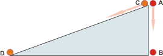

NO ME SALEN
PROBLEMAS RESUELTOS DE FÍSICA DEL CBC
(Leyes de conservación, trabajo, energía mecánica)
|
|

|
2.14- Se dejan caer dos cuerpos, partiendo del
reposo, desde una misma altura h: uno libremente
y el otro sobre un plano inclinado con rozamiento
despreciable. A partir de consideraciones
energéticas, demostrar que ambos llegan al
piso con velocidades de igual módulo.
|
¿Te cuento un secreto? Resulta que si hay un profesor de física que está a punto de corregir un examen y se encuentra que el ejercicio comienza con un dibujo, un esquema, que el alumno hizo para explicarle al docente a qué cosas se refiere cuando las menciona durante el desarrollo del ejercicio... ese docente, ese ser humano (porque en el fondo tenés que admitir que se trata de un ser humano) se sonríe... y continúa leyendo con una sensación agradable de gratitud y bienestar... Incluso, a veces en que el dibujo es tosco o primitivo... no importa, el sabor indeleble de la solidaridad perdura hasta el último acierto o desacierto del ejercicio.
Pasemos al 2.14. Casi todos los ejercicios de energía comienzan por elegir dos situaciones, para comparar energéticamente. En este caso vamos a hacerlo por partida doble, una vez para el cuerpo que baja verticalmente y otra para el cuerpo que baja por el plano inclinado. |
|
|
|  |
Voy a llamar A a la situación en que se suelta el cuerpo que baja verticalmente, y B a su aterrizaje en el suelo. C a la situación en la que se suelta al que desciende por el plano inclinado y D su arribo al horizontal. |
|
|
|
Empecemos con el que baja por la vertical.
ΔEMAB = WFnc
El segundo miembro vale cero: en este problema no actúan fuerzas no-conservativas... no hay rozamiento y nada ni nadie empuja ni frena agregando ni quitando energía. Entonces:
ΔEMAB = 0
EMB — EMA = 0
EMB = EMA
ECB + EPB = ECA + EPA
Algunos términos se anulan, veamos: la energía cinética en A es cero pues el cuerpo se suelta desde ahí, eso es velocidad cero. La energía potencial en B también es cero pues tomé el nivel cero de alturas en la posición de abajo. ¿Qué queda?
ECB = EPA
½ m vB² = m g hA
vB = ( 2 g hA )½
Ahora vamos con el cuerpo que baja por el plano inclinado. Absolutamente todo lo dicho y hecho para el cuerpo anterior también vale para éste... sólo que en vez de B es C, y en vez de B es D. De modo que
vD = ( 2 g hc )½
y como hA es igual a hc... |
|
X½
es lo mismo que
raíz cuadrada de X
(lo escibo de esa manera para no tener que reemplazar el texto por una imagen) |
|
|
|
|
| Este ejercicio lo tenés resuelto por consideraciones de dinámica y cinemática acá. |
|
 |
| DISCUSION: Galileo utilizó el plano inclinado para estudiar el movimiento de los cuerpos y encontrar leyes universales. Lo hizo muy inteligentemente, su experimentación científica no era para nada inocente: siempre tenía una idea acabada sobre cómo debía dar el resultado de cada experimento; y cuando no daba, no renunciaba a la idea, por suerte. Le buscaba explicaciones alternativas. Era muy porfiado. En particular, este experimento (el de la velocidad final en una bajada por el plano inclinado) se resistía con más terquedad que la del propio Galileo. Logró reducir el rozamiento hasta un mínimo casi despreciable... y seguía sin funcionar. Hoy día sabemos cuál era el motivo de la anomalía... |
| DESAFIO: ¿Cuál era la anomalía? ¿Cuál era el motivo por el cual el experimento original de el plano inclinado fracasaba siempre? ¿Qué modificaciones harías para que el experimento funcione? |
| Algunos derechos reservados.
Se permite su reproducción asexual citando la fuente. Última actualización jun-08. Buenos Aires, Argentina. |
|
|